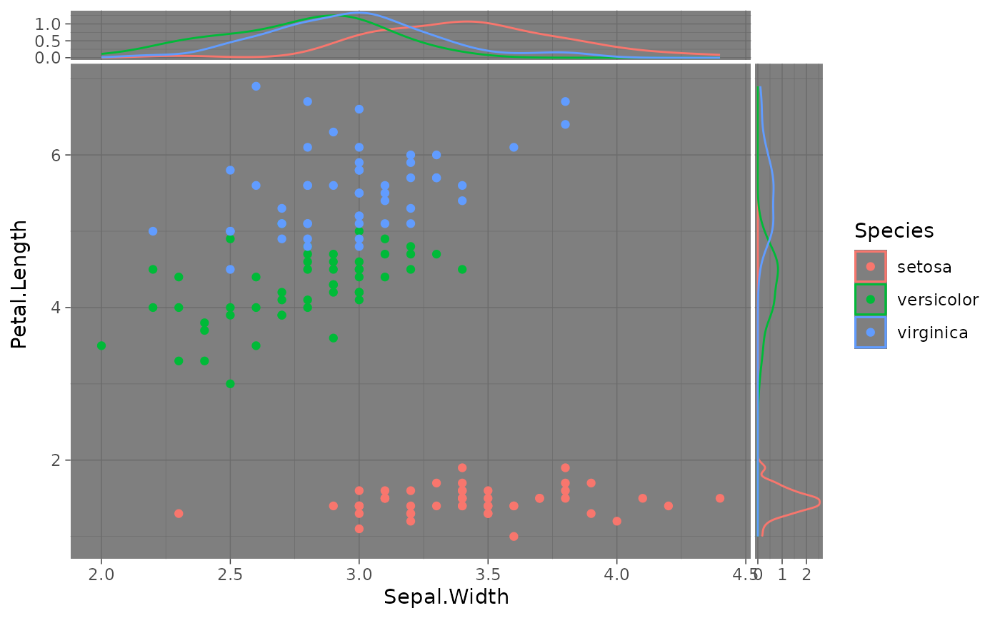
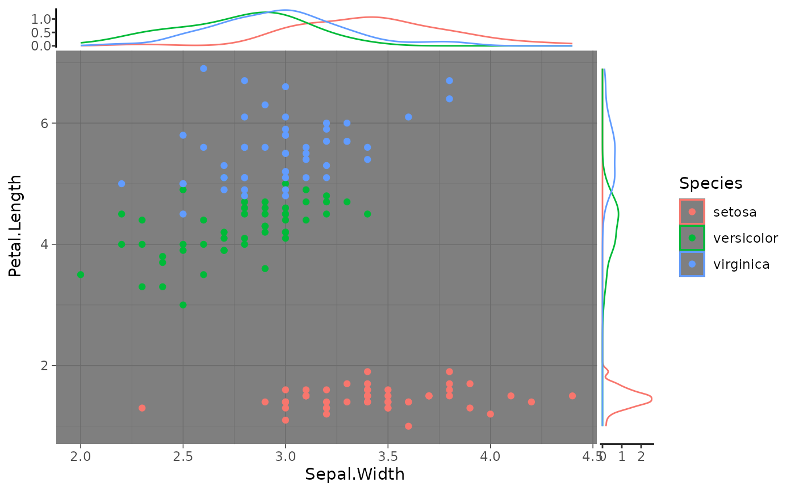
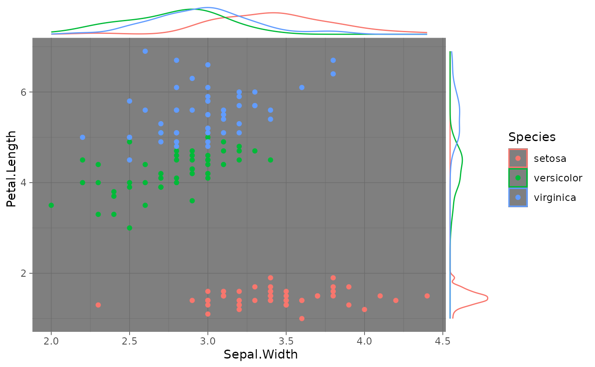
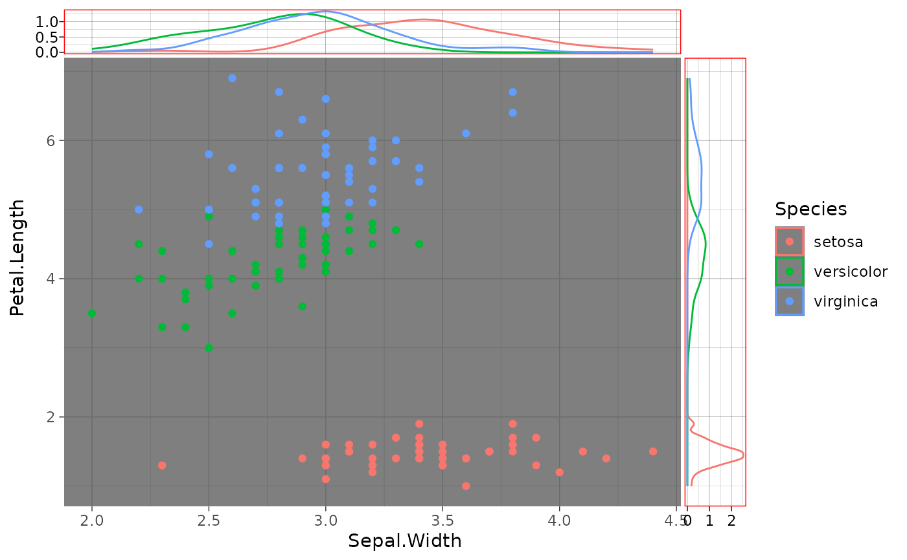

Theme elements to help customize the look and feel of ggside's side panels.
Usage
theme_ggside_grey(
base_size = 11,
base_family = "",
base_line_size = base_size/22,
base_rect_size = base_size/22
)
theme_ggside_gray(
base_size = 11,
base_family = "",
base_line_size = base_size/22,
base_rect_size = base_size/22
)
theme_ggside_bw(
base_size = 11,
base_family = "",
base_line_size = base_size/22,
base_rect_size = base_size/22
)
theme_ggside_linedraw(
base_size = 11,
base_family = "",
base_line_size = base_size/22,
base_rect_size = base_size/22
)
theme_ggside_light(
base_size = 11,
base_family = "",
base_line_size = base_size/22,
base_rect_size = base_size/22
)
theme_ggside_dark(
base_size = 11,
base_family = "",
base_line_size = base_size/22,
base_rect_size = base_size/22
)
theme_ggside_minimal(
base_size = 11,
base_family = "",
base_line_size = base_size/22,
base_rect_size = base_size/22
)
theme_ggside_classic(
base_size = 11,
base_family = "",
base_line_size = base_size/22,
base_rect_size = base_size/22
)
theme_ggside_void(
base_size = 11,
base_family = "",
base_line_size = base_size/22,
base_rect_size = base_size/22
)Details
Incomplete themes:
Unlike the complete themes like theme_grey, ggside's variants are not
considered "complete". This is because the user may want to specify the side panels
separately from the theme of the main panel. This means that theme_ggside_*() functions
should be called after any of ggplot2's complete themes.
ggside theme elements
ggside.panel.scale, ggside.panel.scale.x, ggside.panel.scale.y | expects a scalar numeric
that sets the scaling of side panels relative to the plotting width/height of the main panels.
Default is set to 0.1. i.e. 0.1 indicates side panels are 1/10th the size of the main panel whereas 1
indicates side panel are the same size as main panels. .x will set the scale for the xside panel
and .y will set the scale for the yside panel. |
ggside.panel.spacing, ggside.panel.spacing.x, ggside.panel.spacing.y | expects a scalar unit
that sets the spacing between side panels and main panels. Default facet spacing is typically
unit(5.5,"pt") whereas this element's default is unit(2,"pt") to indicate the relationship
a side panel has to the main panels. .x will set the space between the main panel and the yside panel,
where as .y will set the space between the main panel and the xside panel. |
ggside.panel.background | Sets the background of the side panels. If unspecified, side panels
inherit from panel.background |
ggside.panel.grid, ggside.panel.grid.major, ggside.panel.grid.minor,
ggside.panel.grid.major.x, ggside.panel.grid.major.y, ggside.panel.grid.minor.x, ggside.panel.grid.minor.y | Grid lines for the side panels. These elements inherit from panel.grid and will default
to the current theme's panel.grid inheritance unless specifically set. |
ggside.axis.text, ggside.axis.text.x, ggside.axis.text.y,
ggside.axis.text.x.top, ggside.axis.text.x.bottom, ggside.axis.text.y.left, ggside.axis.text.y.right | Tick labels along the side panel's axis. Due to the layout of side panels, ggside.axis.text.x
will only affect the yside panel's x-axis text and ggside.axis.text.y will
only affect the xside panel's y-axis text. These elements inherit from axis.text
and will default to the current theme's axis.text inheritance scheme unless
specifically set. |
ggside.axis.line, ggside.axis.line.x, ggside.axis.line.y,
ggside.axis.line.x.top, ggside.axis.line.x.bottom, ggside.axis.line.y.left, ggside.axis.line.y.right | Lines along the side panel's axis.Due to the layout of side panels, ggside.axis.line.x
will only affect the yside panel's x-axis text and ggside.axis.line.y will
only affect the xside panel's y-axis text. Theme elements inherit from axis.line
and will default to the current theme's axis.line inheritance scheme unless
specifically set. |
ggside.axis.ticks, ggside.axis.ticks.x, ggside.axis.ticks.y,
ggside.axis.ticks.x.top, ggside.axis.ticks.x.bottom, ggside.axis.ticks.y.left, ggside.axis.ticks.y.right | Tick marks along the side panel's axis. Due to the layout of side panels, ggside.axis.ticks.x
will only affect the yside panel's x-axis text and ggside.axis.ticks.y will
only affect the xside panel's y-axis text. Theme elements inherit from axis.ticks
and will default to the current theme's axis.ticks inheritance scheme unless
specifically set. |
ggside.axis.ticks.length, ggside.axis.ticks.length.x,
ggside.axis.ticks.length.y, ggside.axis.ticks.length.x.top, ggside.axis.ticks.length.x.bottom,
ggside.axis.ticks.length.y.left, ggside.axis.ticks.length.y.right | length of ticks along the side panel's axis. Due to the layout of side panels, ggside.axis.ticks.length.x
will only affect the yside panel's x-axis text and ggside.axis.ticks.length.y will
only affect the xside panel's y-axis text. Theme elements inherit from axis.ticks.length
and will default to the current theme's axis.ticks.length inheritance scheme unless
specifically set. |
ggside.axis.minor.ticks, ggside.axis.minor.ticks.x, ggside.axis.minor.ticks.y,
ggside.axis.minor.ticks.x.top, ggside.axis.minor.ticks.x.bottom, ggside.axis.minor.ticks.y.left, ggside.axis.minor.ticks.y.right | Tick marks along the side panel's axis. Due to the layout of side panels, ggside.axis.minor.ticks.x
will only affect the yside panel's x-axis text and ggside.axis.minor.ticks.y will
only affect the xside panel's y-axis text. Theme elements inherit from axis.minor.ticks
and will default to the current theme's axis.minor.ticks inheritance scheme unless
specifically set. |
ggside.axis.minor.ticks.length, ggside.axis.minor.ticks.length.x,
ggside.axis.minor.ticks.length.y, ggside.axis.minor.ticks.length.x.top, ggside.axis.minor.ticks.length.x.bottom,
ggside.axis.minor.ticks.length.y.left, ggside.axis.minor.ticks.length.y.right | length of minor ticks along the side panel's axis. Due to the layout of side panels, ggside.axis.minor.ticks.length.x
will only affect the yside panel's x-axis text and ggside.axis.minor.ticks.length.y will
only affect the xside panel's y-axis text. Theme elements inherit from axis.minor.ticks.length
and will default to the current theme's axis.minor.ticks.length inheritance scheme unless
specifically set. |
Examples
library(ggplot2)
library(ggside)
p <- ggplot(iris, aes(Sepal.Width, Petal.Length, color = Species)) +
geom_point() +
geom_xsidedensity() +
geom_ysidedensity() +
theme_dark()
p

p + theme_ggside_classic()

p + theme_ggside_void()

p + theme_ggside_linedraw() +
theme(ggside.panel.border = element_rect(colour = "red"))
